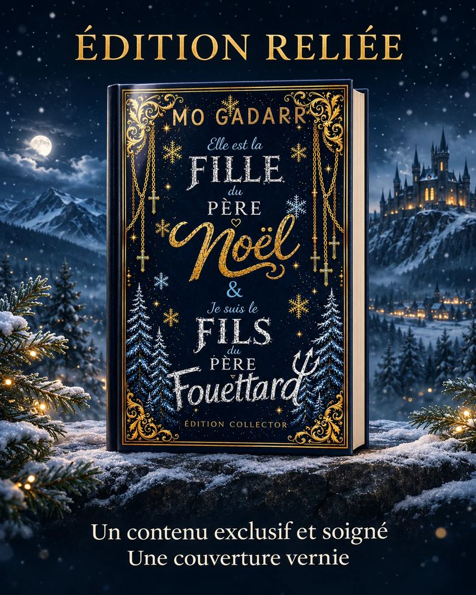

Noëlie
Le château s'illumine à l'approche des fêtes.
Dernier roman
Deux héritages. Zéro point commun.
Ebook · Broché · Relié collector
Imaginez un monde où le Père Noël et le Père Fouettard règnent chacun sur leur territoire.
Le château s'illumine à l'approche des fêtes.
Un train souterrain relie des peuples qui ont appris à se méfier l'un de l'autre.
L'hiver est rude et les habitants ont faim.
Elle étudie la façon de faire pousser des plantes en plein hiver.

Il porte un nom qui suffit à éveiller la méfiance en Noëlie.
Pourtant, dès leur première rencontre, ils ont du mal à détourner le regard.
C'est dans ce monde divisé que Wendy Stanford, la fille du Père Noël, rencontre Dante Dodds, le fils du Père Fouettard.
Au fil d'une sortie sur la glace, d'un instant volé dans une serre et d'une valse au bal de Noël, ils se découvrent loin des certitudes de leurs familles. Mais Dante garde un secret. Et plus il s'attache à Wendy, plus il lui devient difficile de lui dire la vérité.
Pendant ce temps, la magie de Noël s'affaiblit. Une clé pourrait lui rendre sa force, à condition que les deux camps acceptent enfin de s'unir.
J'avais envie d'écrire une romance où un premier baiser peut être aussi simple qu'un moment partagé autour d'un bol de pop-corn, même quand les deux personnes qui s'embrassent portent les noms les plus célèbres de Noël.
Un contenu exclusif et soigné.
Une couverture vernie.


Choisissez votre camp et posez avec Wendy & Dante dans notre filtre photo de Noël.